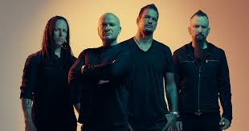

Disturbed es una banda de heavy metal formada en Chicago, Illinois, por David Draiman (voz), Dan Donegan (guitarra), John Moyer (bajo) y Mike Wengren (batería). Sus ex integrantes son el cantante Erich Awalt y el bajista Steve Kmak. Fundada en 1994 bajo el nombre de Brawl, y sólo hasta 1996 cuando David Draiman fue contratado como nuevo vocalista cambió su nombre a Disturbed. Comenzaron como una banda de nu metal pero después mostraron fuertes influencias del heavy metal incorporando solos y riffs de guitarra más técnicos.
